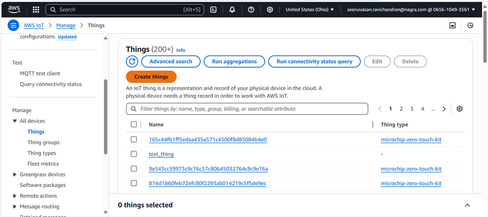
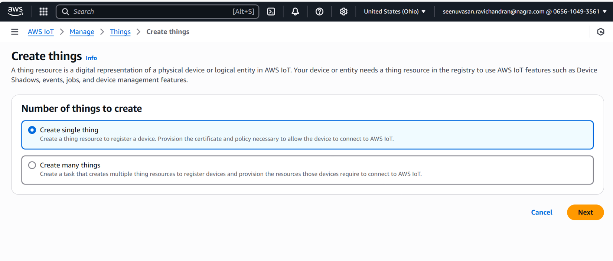
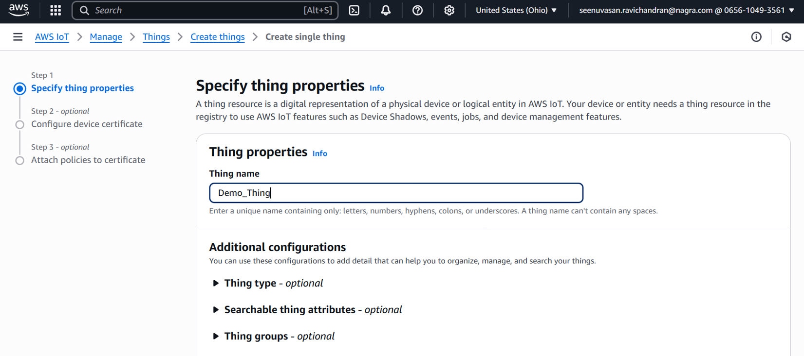
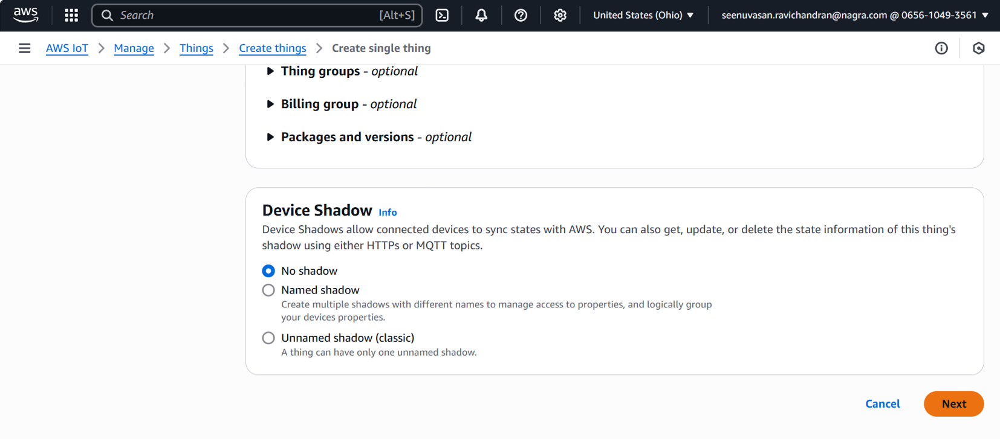
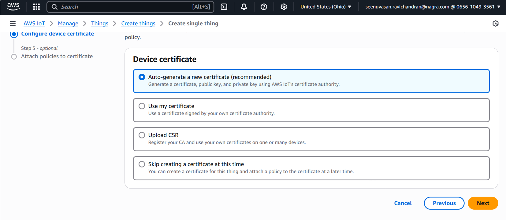
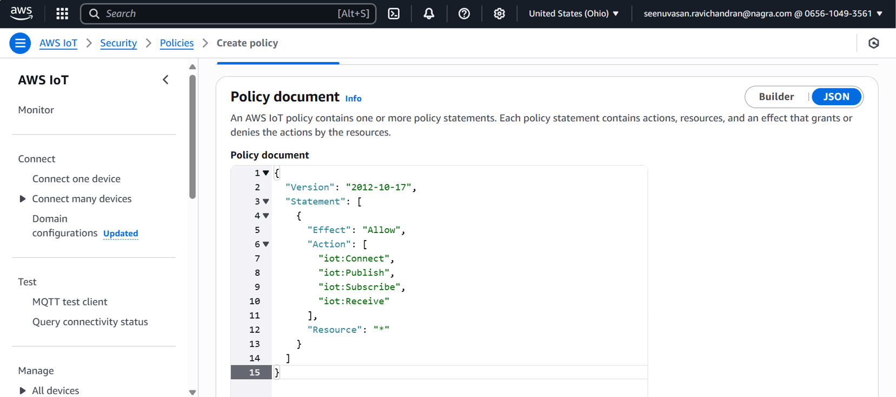
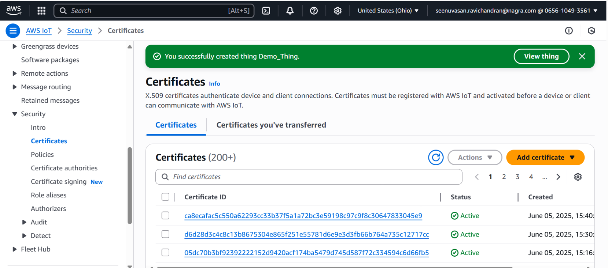
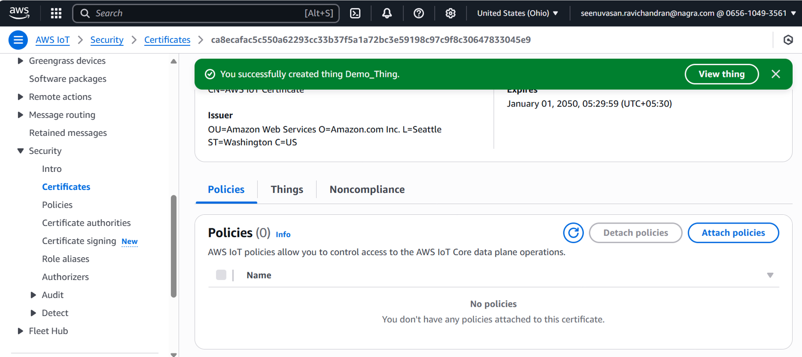
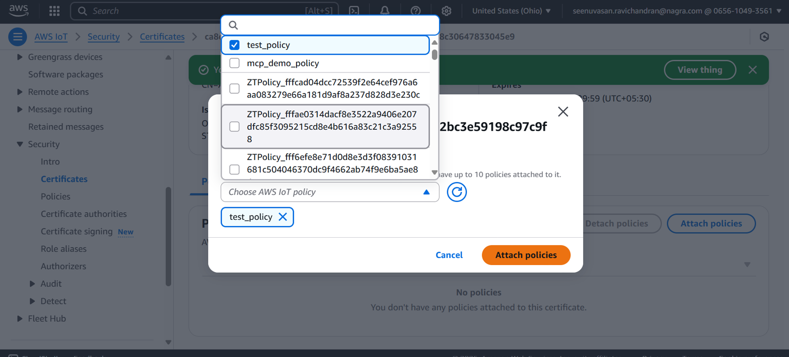

SAME54 — AWS IoT Thing & Policy Setup
This guide walks you through creating an AWS IoT Thing, generating a policy, and attaching the policy to a certificate for your SAME54 device.
Prerequisites: An active AWS account with the CA certificate already registered. Complete AWS Setup Requirements first.
1. Create an AWS IoT Thing
- Go to AWS IoT Core Console.
- Click Manage > Things in the left sidebar.

AWS IoT — Manage > Things
- Click Create things, then Create a single thing.

Create a single thing
- Enter a unique Thing Name (e.g.
Demo_Thing).

Enter Thing Name
- Click Next.

Default settings
2. Create and Attach a Certificate
- Choose Auto-generate a new certificate and click Next.

Auto-generate certificate
- Download the device certificate, private key, and Amazon Root CA.
3. Create an IoT Policy
- Go to Security > Policies and click Create policy.
- Enter a Policy Name (e.g.
Demo_Policy).
- Click JSON and paste the following policy:
{
"Version": "2012-10-17",
"Statement": [
{
"Effect": "Allow",
"Action": [
"iot:Connect",
"iot:Publish",
"iot:Subscribe",
"iot:Receive"
],
"Resource": "*"
}
]
}

IoT policy statement
4. Update <tt>App_Config.h</tt> with Your Thing Name
Open SAME54_X\keystream_connect\App_Config.h and set the AWS_THING_NAME macro:
#define AWS_THING_NAME "Demo_Thing"
Compile and flash the project. The device begins onboarding and certificate download automatically. After successful onboarding the device certificate appears in AWS IoT Core.
5. Attach Policy to the Certificate
- Go to Security > Certificates in AWS IoT Core.

AWS IoT — Certificates
- Select your device certificate.
- Click Actions > Attach policy.

Attach policy to certificate
- Select
Demo_Policy and confirm.

Policy attached
6. Reset and Verify
Reset the SAME54 device. After reboot, the device communicates securely with AWS IoT Core. Monitor activity in the AWS IoT Core console to confirm successful connectivity.